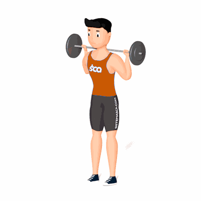

Good Morning

Exercício para hipertrofia e fortalecimento dos glúteos, como também os músculos posteriores da coxa.
Ficha Técnica
Tipo: Musculação
Grupo Muscular: Glúteo
Aparelho: Nenhum
Músculos: Nenhum
Como realizar
- Colocar a barra nas costas, na altura do trapézio, assim como é posicionada para efetuar o agachamento;
- Jogar o quadril para trás, ao mesmo tempo que se inclina o corpo para a frente, até chegar a um ângulo de mais ou menos 90 graus, sempre mantendo a coluna em posição neutra;
- Realizar extensão do quadril e do tronco até estar de pé, novamente na posição inicial;
- Repetir o movimento pelo número de repetições estipulado.
 RC STORE
RC STORE